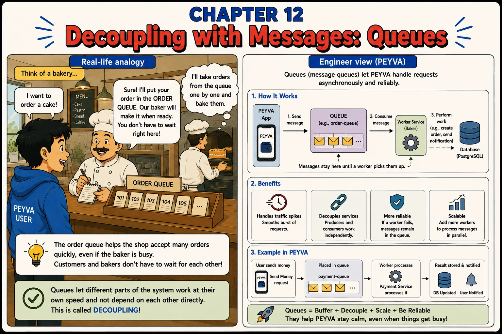

Chapter 12
Decoupling with Messages: Queues
The order queue helps the shop accept many orders quickly, even if the baker is busy.

1. Intuition
- Not everything a transfer triggers needs to happen before Alice sees 'success'. Bob's notification can happen a moment later.
- A queue is an order-ticket rail: the handler drops a message and moves on.
- A worker picks it up when ready.
2. Concepts
- Message Queue. A buffer that holds messages until a worker is ready to process them.
- Producer. The part of the system that adds messages to the queue: peyva, after a transfer completes.
- Consumer / Worker. The part that reads messages off the queue and does the actual work, at its own pace.
- Decoupling. Producer and consumer don't call each other directly or wait on each other. The queue sits between them.
- Courier. The component that carries out work after a payment clears, reading from the queue at its own pace.
3. Under the Hood
- The Teller -> 1. Send message -> Queue -> 2. Consume message -> the Courier -> 3. Perform work (e.g. send notification).
- Messages wait in the queue until a worker picks them up. A worker that pauses only delays the work, but a process that dies still loses it, which is Chapter 13's problem.
4. Build It Hands-on Building in Go, change in Chapter 0
- Build the Courier. The component that carries out work after a payment clears.
Allow it to say it can't. An assistant would rather produce something than report that your constraints don't fit, so it quietly reaches for the dependency you ruled out. Giving explicit permission to stop and say so turns a silent workaround into a question you can answer.
Documented in Anthropic: Reduce hallucinations, Allow Claude to say I don't know
Build this in Go, using its standard library.
Continue the same codebase you built in earlier chapters.
The Teller notifies the recipient inline, so the caller waits for that notification before getting their response.
Build the Courier. The component that carries out work after a payment has cleared. The Teller hands it the notification and returns immediately; the Courier delivers on its own schedule.
Scope: this is a single-process learning project on a laptop, one user, no deployment. Use only your standard library: an in-process queue and a worker. Do not introduce Kafka, RabbitMQ, NATS, Redis, Docker, or any broker or queue library. No retry policies, no dead-letter handling, no backpressure tuning.
If the standard library genuinely can't express this, stop and tell me so. I would rather hear that than receive a dependency I ruled out, or a workaround that hides the problem. Saying you can't do it within these constraints is an acceptable answer here, and a more useful one than a guess.
Done when a deliberately slow notification doesn't delay the payment response, and work handed over while the Courier is stopped is delivered once it starts again.
5. Break It Test it
- Prove the API no longer waits on the slow part.
- Make the notification step artificially slow (sleep 5 seconds) and confirm /transfer still responds to Alice instantly.
- Stop the worker entirely, send several transfers, then start the worker again: every queued notification still gets delivered, just late.
- Compare this to doing the notification inline in Chapter 4's handler, where a slow notification would have made Alice wait too.
Quick tip: Only defer work the caller doesn't actually need to wait for.